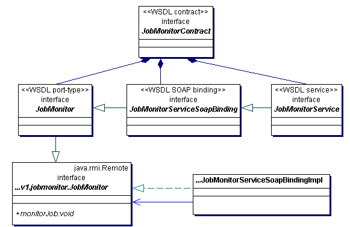

Class Diagram JobMonitor-service-interfaces
Class Diagram JobMonitor-service-interfaces
This service has both compile-time and run-time contracts.
The compile-time contact has been generated to match the service-definition interface, but is now seperately maintained in the code base as a first-class interface.
The run-time contract is the same as the compile-time contract except for adjustment of the endpoint URL in the WSDL service.
Shortcuts to Elements
 of ClassDiagram jobmonitor
of ClassDiagram jobmonitor Interface org.astrogrid.jes.delegate.v1.jobmonitor.JobMonitor
Interface org.astrogrid.jes.delegate.v1.jobmonitor.JobMonitor of ClassDiagram JobMonitor
of ClassDiagram JobMonitor Interface webapps.jes.JobMonitor.JobMonitor
of ClassDiagram JobMonitor
Interface webapps.jes.JobMonitor.JobMonitorContract
of ClassDiagram JobMonitor
Interface webapps.jes.JobMonitor.JobMonitorService
of ClassDiagram JobMonitor
Interface webapps.jes.JobMonitor.JobMonitorServiceSoapBinding
of ClassDiagram jobmonitor
 Class org.astrogrid.jes.delegate.v1.jobmonitor.JobMonitorServiceSoapBindingImpl
Class org.astrogrid.jes.delegate.v1.jobmonitor.JobMonitorServiceSoapBindingImpl